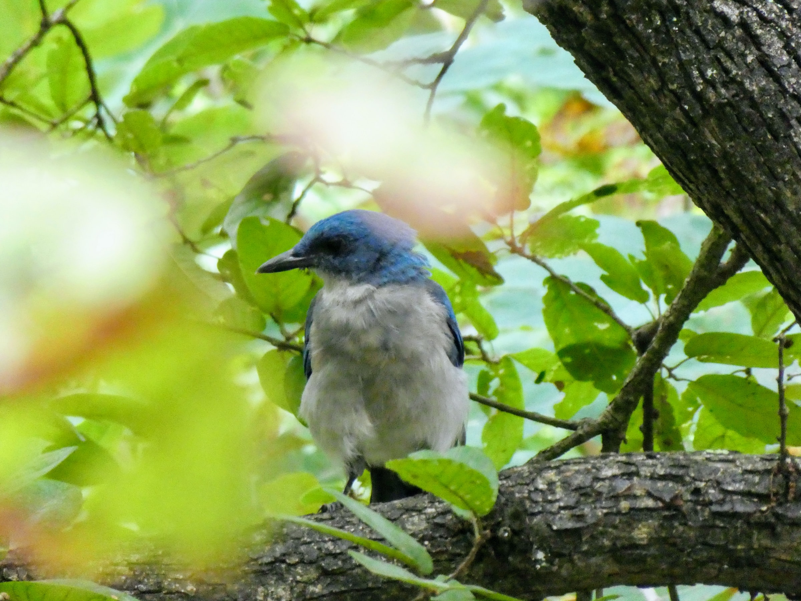
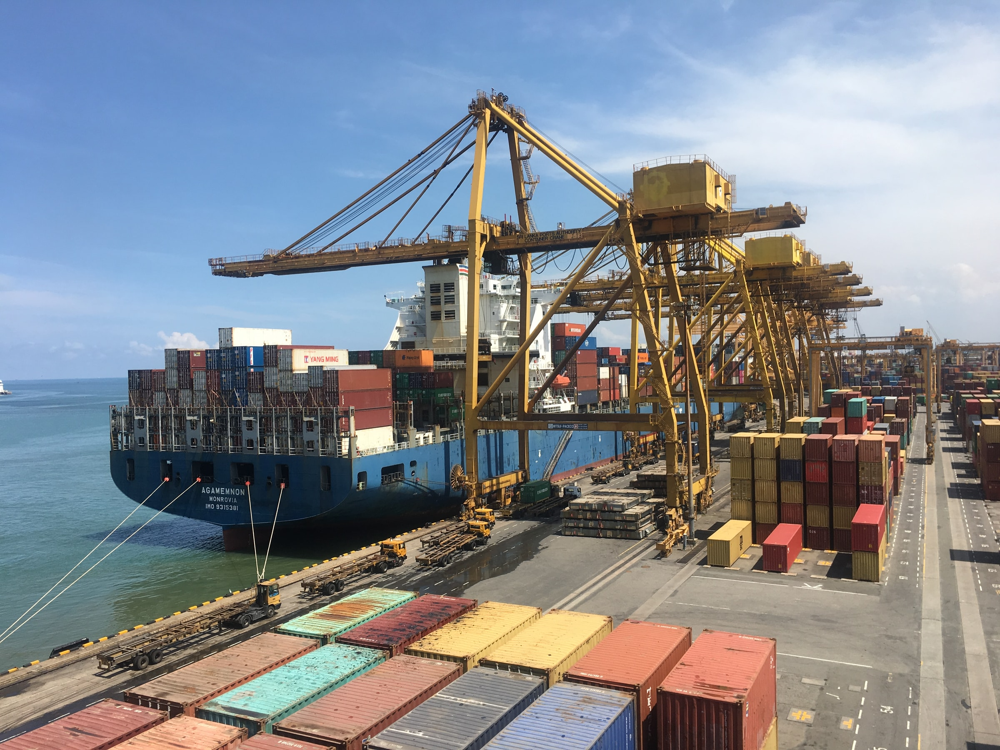

SOSTENIBILIDAD
Comprometidos con nuestros vecinos, el medio ambiente y el desarrollo sustentable de nuestra comuna.
Estudio de avifauna en las lagunas de Llolleo y la desembocadura del río Maipo
Paseo Bellamar, principal atractivo turistico del borde costero
Organización y apoyo en actividades culturales de relevancia en nuestra comuna
Visita también nuestras iniciativas digitales:
MINISITIO PARA NIÑOS Y ESCOLARES
SAN ANTONIO Y PASEO BELLAMAR